Counter-archive · after Nel Noddings, Susan Sontag and Cecile Zhang
Pink Eye
What happens to the Ludovico sequence if we stop looking at the eye?
In A Clockwork Orange (1971) a young man's eyes are clamped open and he is made to watch. Pink Eye keeps the real footage and turns the camera away from the clamp. It is told twice, at once: as care that answers a procedure, and as a film that finally looks away.
The title: LIDS
The seam between the two stacked films is a lid line. An ink hairline draws across it. PINK opens upward and EYE opens downward, like eyelids. Then the rose paper turns into windows, the films start playing inside the letters, and the type grows until it is the frame. The eye opens by itself. Nothing forces it.
- Core container
- The seam is the lid line. PINK is the upper lid and EYE the lower one.
- Typographic engine
- A cut-paper letterface drawn in code, not a font. An open axis runs from a closed hairline to full height. A width axis sets each word flush to the measure and lets it breathe with the swell.
- Analog seed
- Ragged scissor edges fixed per letter, an ink hairline that wobbles like a hand drew it, paper fibre, and lifted shadows.
- Unbreakable spec
- Two 16:9 cells, a 30 px margin, one word per cell, three colours only. Nothing else is on screen.
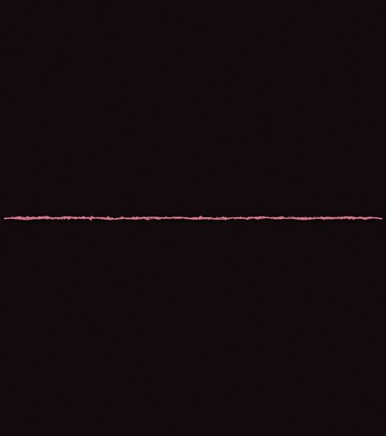
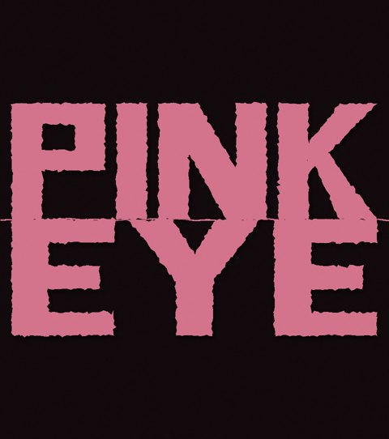
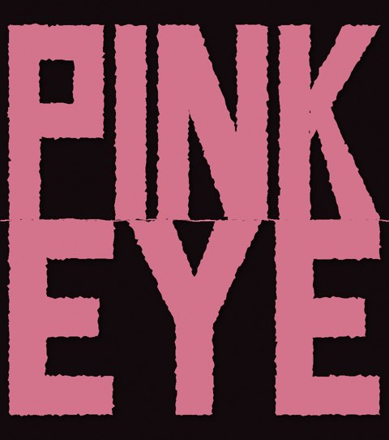
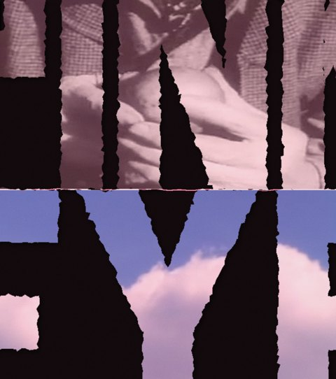
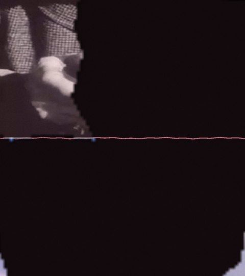
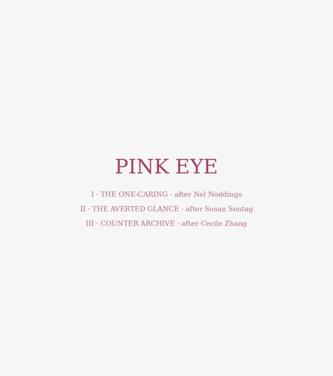
Three parts
The film stacks two cuts that play at once, The One-Caring above The Averted Glance. Both turn white at the same moment and dissolve into one end card. The clamped eye and the screaming never appear.
I · The One-Caring
after Nel Noddings, Caring (1984)
Each procedure from the Ludovico room is answered by the same gesture done as relation.
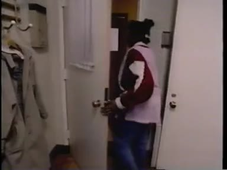
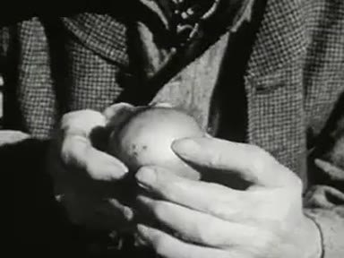
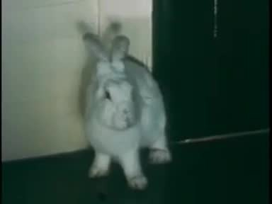
II · The Averted Glance
after Susan Sontag, On Photography (1977), Regarding the Pain of Others (2003)
The watchers and a man with binoculars, then "load, aim, shoot" over a camera, a cannon and the newsreel Kubrick projected. Then the film does what Alex was not allowed to do: it looks away, into cloud and out to sea.
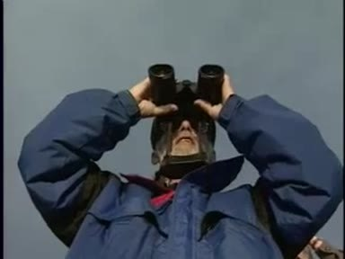
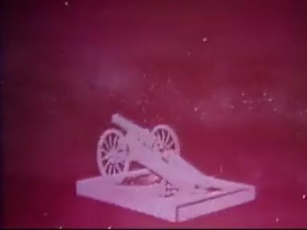
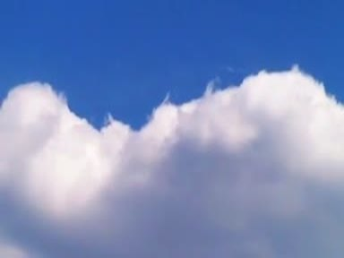
III · Counter Archive
after Cecile Zhang
The frame for both cuts: the archive is reread for what it cut out. On this site that runs from the censor's tin in Paradiso, to the eye's own afterglow in Afterimage, to the playable reel of rescued cuts in Contaminant Jelly.
Swim it: Contaminant Jelly
Pink Eye's companion as play. A censor's bell rings over the care strand, and those frames are cut. They sink into the tank and are kept, like the tin in Cinema Paradiso. You are the jellyfish: catch a glowing frame, carry it to the sun and splice it into your reel. Any frame with a touch in it burns in the censor's beam, and you can dive for it. After ninety seconds, your reel of returned cuts plays.
Swim itPhone or desktop. More on the Contaminant Jelly page: the editor, the theory of play, and two cuts of one take.
Sound
Everything is synthesized. Nothing is sampled, and none of the clip's audio is used.
- Under the title: a low swell, and a single bell as the eye opens.
- The One-Caring: machine hum and a cool harp under each procedure, then a wordless choir of human voices under each relation.
- The Averted Glance: the projector's hum while we watch, three falling bells on load, aim and shoot, then open air and the sea once the film looks away.
- The ending: both scores meet on one harp chord and a bell under the shared card.
What broke and what changed
- The first version chopped the clip into pinned windows over its own cut-up sound. Verdict: "horrible to watch".Long dissolves only, and a new synthesized score.
- Every early version stared at the clamped eye and repeated the violence it meant to answer.The eye and the screaming were taken out. The film looks at the people and the apparatus instead.
- A worktable version was 61% black, and its picture filled a quarter of the screen.Full frame and bright, at a mean brightness of about 130 out of 255.
- A cartoon version without the real footage was the wrong answer.The real footage stays, recombined with public-domain archive.
- Stray frames of the clamped eye flashed up whenever a slow-motion loop turned.Every clip is cut down to one unbroken shot before it is used.
- Scene changes popped where a branch began before its dissolve did.Each scene now starts where its dissolve starts. The largest change between frames is now small.
Sources
| Material | Source | Rights |
|---|---|---|
| The Ludovico sequence | Stanley Kubrick, A Clockwork Orange (1971) | Under copyright. Used for criticism in the film, and not published on this page. |
| A woman opening a door | Straight Talk | public domain |
| Hands holding an apple | Miracle of the Can (1956) | public domain |
| A white rabbit | Frances and Her Rabbit | public domain |
| A cat looking up, a camera lens | Gateways to the Mind | public domain |
| A man with binoculars | National Wildlife Refuge System | public domain |
| A model cannon | Space Navigation | public domain |
| Cloud | Top Of The Cloud (time lapse) | public domain |
| Ocean | The Big Bounce (1960) | public domain |
The archive frames are cut from the Internet Archive by secondhand-motion. Thinkers: Nel Noddings, Caring: A Feminine Approach to Ethics and Moral Education (1984). Susan Sontag, On Photography (1977) and Regarding the Pain of Others (2003). Cecile Zhang, Counter Archive.
Read the code
Carried forward
The eye opens by itself. The next cut could time the two halves so their turns land together: "held" above as "shoot" sounds below.